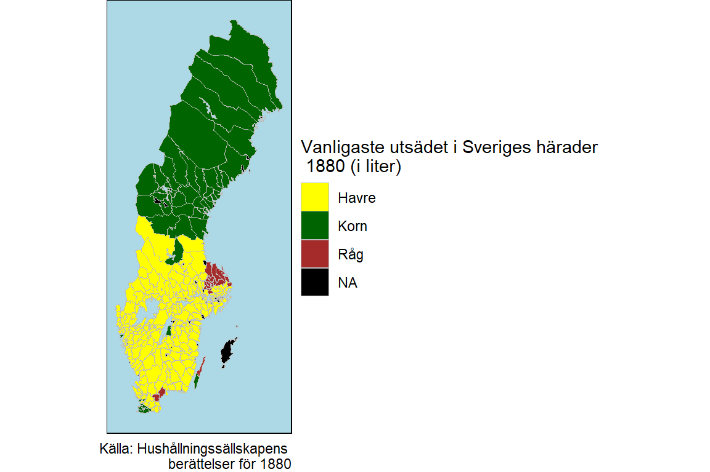

Om havre och korn: Spannmålssådd i Sverige 1880
I höstas grävde jag lite i Hushållningssällskapens berättelser. Från denna mycket detaljerade jordbruksstatistikserie så plockade jag fram statistik på (oftast) häradsnivå över utsädet av de fyra spannmålen havre, vete, råg och korn år 1880. Som kartan nedantill visar så var Sverige i princip uppdelad i en nordlig kornodlande del och en sydlig havreodlande del. Uppland och delar av Kristianstads län och norra Öland avvek dock från det generella mönstret. Där var det istället råg som var det vanligaste utsädet. Sveriges bördigaste del, sydvästra Skåne, skiljde sig också i det att korn var det vanligaste utsädet. Det bör dock ha varit en annan sorts korn än den som såddes i Norrland. Även öster om Vättern och på södra Öland såddes främst korn. En annan intressant iaktagelse är att Tjörns härad i det annars havreproducerande Göteborgs och Bohus län hade korn som mest odlade sädesslag.

Det är också intressant att titta på datan i aggregerad form. Där blir det tydligt att havre var det överlägset mest sådda sädesslaget i Sverige 1880. Kornet var mindre vanligt än råget och vetet relativt oviktigt. Det bör dock nämnas att havre var ett betydligt billigare spannmål än övriga sädesslag. Enligt Jörbergs (1972) prisserie så var priset för 1 hektoliter havre 4,97, för korn 8,56, råg 10,65 och för vete 13,25.

Havre var i alla fall det svenska jordbrukets stora exportprodukt under 1800-talets mitt och exporten når sin topp 1879. På 1890-talet blev man instället en nettoimportör av havre. Om jag får tid till att digitalisera 1890-års jordbruksstatistik kommer jag att återkomma till detta vid ett senare tillfälle.
Jonatan Andersson
Doctoral student
My name is Jonatan Andersson and I’m a PhD student at the Department of Economic History at Uppsala University. I live in the steel-mill town Borlänge with my girlfriend Felicia and our daughter Margareta.